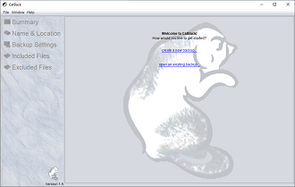
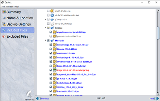
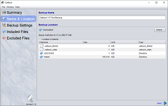
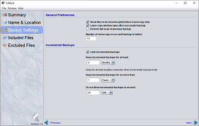

|  |
CatBack is a light-weight file backup program. CatBack attempts to differentiate itself from other available backup software in the following ways:
|
CatBack keeps track of what files you want to back up by storing this information in a Backup Profile. Backup Profiles operate much like editing documents in that you can load them, save them, and create new ones.
When you start CatBack for the first time, you will want to create a new Backup Profile by selecting New from the File menu. Once this is done, you will be taken to a series of panels to enter your backup information. Follow through each panel by clicking the navigation buttons at the bottom or by selecting the panels from the panel list on the left side of the screen. The panels you will navigate through include:
As a convenience, CatBack will always reload the last Backup Profile on program startup.
With your Backup Profile open, you can include or exclude files or directories to and from your backup set by checking or unchecking the checkboxes next to the files or directories on the included and excluded tabs. Checkboxes in CatBack have three states to be aware of:
|  |
In addition, the file names will have one of four different appearances:
|
Excluded files and directories take precedence over included files and directories. The purpose of being able to mark files and directories as excluded (and the difference from simply unchecking those files and directories from the Included tree), is so that you can exclude those files while keeping the parent directories in the checked state on the Included tree (rather than a paritially checked state).
Note that you do not have to use the checkboxes in the excluded tree window; you can also just exclude files while in the included tree window by using the right-click context menu on files or directories within the tree.
Pay attention to any selected files or directories that have icons with a warning or missing indicator.
When you see warning or missing indicators on checked files or directories, it means the selected files or directories were previously added to your backup set but are no longer found at their previous locations. Such files have generally either been deleted, renamed, or moved. If the files are renamed or moved, you will need to manually uncheck them and then recheck them at their new locations; you may also want to manually update the directory structure at the backup location if you do not want the backup process to recopy such files.
Start your backup by clicking on the Begin Backup button on the Summary panel or from the File menu (you can also run a backup by using the "-b" command-line switch described later). A backup consists of up to 6 steps. For each step a progress bar may appear if the step will take a significant amount of time. However, it is not uncommon for a step to be very quick and even skipped completely, in which case you will not see a progress bar for that step. Once the backup is complete, a prompt will appear with a summary of the backup process.
The backup steps are as follows:
When using the "-b" command line backup switch, a backup is immediately performed for the specified Backup Profile; if the backup completes normally, CatBack then exits. This type of backup execution is intended to allow a user to schedule periodic backups using a task scheduler. CatBack does not include a built-in scheduler, but most systems have their own task schedulers that can be used. For example, if you have a Backup Profile with filename c:\myfiles.catback, you could have a task scheduler periodically run CatBack using a command like follows:
catback.exe -b myfiles.catback
|  |
CatBack stores files in a simple directory structure that mimics the structure on the source drive(s) you backed up. The backed up files are not compressed or changed in any way from their original versions. This is done for simplicity. Restoring files is as simple as navigating to the backup directory using your preferred file browser and copying the files back to your source drive. The directory structure of the backup location includes a directory named latest that stores the most recent backup, and zero or more incremental backup directories with dates for names. When you perform a backup, all of the latest files go into the latest directory. Any files have have been changed or deleted since the last backup are moved into the incremental backup directory with the current date as a directory name. The incremental backup directories allow you to view and recover files from older backups if necessary. In addition to the latest and incremental backup directories, there should also be a statistics file named ".catback_stats" in the backup directory; this file contains your backup history. There will also be a file named ".catback_filelist" in the backup directory; this file stores information about the latest backup and allows CatBack to skip a full scan of the last backup on the next backup; this file is not critical but allows the backup speed to be accelerated so long as "Perform full scan of previous backup" is not checked in your Backup Settings. |
As an example, assume you have a backup directory of D:/backup. Assume you have performed two backups since the Backup Profile was created, and the second backup was performed on March 3, 2009, where one or more files had been changed or deleted. In this case, you would have the following directory structure:
D:/|  |
You can configure how long to keep incremental backup directories for in your backup settings. Or you can manage them yourself, simply by deleting incremental backup directories you no longer wish to keep. If more than one backup is performed on the same day, subsequent incremental backup directories on that day will have an additional number appended to the directory name (i.e., if a second backup was performed on March 3, 2009, it might create the directory 20090303-1). |
CatBack can be put into a "Dry Run" mode with the following command-line switch:
"-dryrun"
In Dry Run mode, you can see what CatBack would do when launching a backup without having it actually perform the backup. In effect, it will simulate any backup you run without actually copying, moving, or deleting any files to or from the backup location. However, changes to the backup settings will be applied like normal; only the execution of the backup is simulated.
The simulated speed of copying each file can be changed with additional command-line argument:
"-speed <speed-factor>"
The simulated time to copy a file will be equal to, in milliseconds, the size of the file in bytes / speed-factor. However, there is also a set maximum simulated copy time of 6 seconds for each file. The default speed-factor value is 10000.
Logging is configured via a log4j2.xml logging configuration file. Normally, this file would reside in the application startup directory. If you start CatBack without this file present, it will automatically be created, but will not take effect until the next time CatBack is started.
The default log4j2.xml configuration file will send log messages to the file "catback.log" located in the application startup directory. You can reroute logging in CatBack by adding one of the following command-line switches when starting the program:
"-l off" - turns off logging
"-l console" - sends logging messages to the console (note: you normally will not see console output if launching CatBack from a desktop shortcut or start menu)
"-l window" - sends logging messages to a dialog window within the application. When this is active, the dialog is launched from the Application Log menu item in the Window menu.
"-l file:<log-file-path>", where log-file-path is the file path and name of the log file. Leave off the colon and log-file-path to reset to the default log file.
When using the -l flag, the log4j2.xml file is re-written to provide the desired logging configuration. To pick up the changes, the application must be restarted. If you are familiar with log4j2 configuration files, you can also manually modify the configuration to your own liking.
Detailed version history information is available through the Cat Back main menu (Help->About).
CatBack is a Java application and requires Java 1.8 or later to operate.
Testing on CatBack has only been performed under various versions of Windows and Mac OS X. Linux platforms have been tested as backup locations only. CatBack has been designed to work with large backups, and has been successfully tested with backups as large as 100,000 files and totaling over 500 GB.
Credits:
* The file comparison code contributed by Joe Orost is for comparing Backup Profiles only, to determine if the user should be prompted to save their Backup Profile before program exit. It is not used for the actual backup process. The backup file comparison process looks only at file length and modified date, whereas the code provided by Joe Orost does a thorough bitwise comparison.
{kind=link}
{kind=link}
{kind=link}
{kind=link}